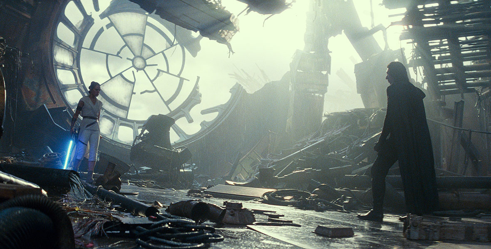

Star Wars: The Rise of Skywalker
Star Wars: The Rise of Skywalker (film) The riveting conclusion of the seminal Skywalker saga, in which new legends are born and the final battle for freedom is fought. Released December 20, 2019, also in 3D, IMAX, and IMAX 3D, after a December 18 release in Belgium, France, and other countries. Directed by J.J. Abrams. Stars Carrie Fisher (Leia), Mark Hamill (Luke Skywalker), Adam Driver (Kylo Ren), Daisy Ridley (Rey), John Boyega (Finn), Oscar Isaac (Poe Dameron), Anthony Daniels (C-3PO), Naomi Ackie (Jannah), Domhnall Gleeson (Gen. Hux), Richard E. Grant (General Pryde), Lupita Nyong’o (Maz Kanata), Keri Russell (Zorii Bliss), Joonas Suotamo (Chewbacca), Kelly Marie Tran (Rose Tico), Billy Dee Williams (Lando Calrissian). 142 min. Filmed in the U.K. From Lucasfilm. Filmed in wide-screen format. The film was nominated for Academy Awards for Original Score by John Williams, Sound Editing by Matthew Wood and David Acord, and Visual Effects by Roger Guyett, Neal Scanlan, Patrick Tubach, and Dominic Tuohy.